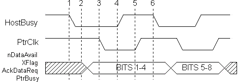

The Nibble mode is the most common way to get reverse channel data from a printer or peripheral. This mode is usually combined with the Compatibility mode or a proprietary forward channel mode to create a complete bi-directional channel.
All of the standard parallel ports provide 5 lines from the peripheral to the PC to be used for external status indications. Using these lines, a peripheral can send a byte of data (8-bits) by sending 2 nibbles (4-bits) of information to the PC in two data transfer cycles. Unfortunately, since the nACK line is generally used to provide a peripheral interrupt, the bits used to transfer a nibble are not conveniently packed into the byte defined by the Status register. For this reason, the software must read the status byte and then manipulate the bits in order to get a correct byte.
Table 1 identifies the signal names for the Nibble mode. Figure 1 shows the basic data handshake for a nibble mode transfer from the peripheral to the host.
| SPP Signal | Nibble Mode Name | In/Out | Description -- Signal usage when in Nibble Mode data transfer |
|---|---|---|---|
| nSTROBE | nSTROBE | Out | Not used for reverse data transfer |
| nAUTOFEED | HostBusy | Out | Host nibble mode handshake signal. Set low to indicate host is ready for nibble. Set high to indicate nibble has been received. |
| nSELECTIN | 1284Active | Out | Set high when host is in a 1284 transfer mode. |
| nINIT | nINIT | Out | Not used for reverse data transfer |
| nACK | PtrClk | In | Set low to indicate valid nibble data, set high in response to HostBusy going high. |
| BUSY | PtrBusy | In | Used for Data bit 3, then 7 |
| PE | AckDataReq | In | Used for Data bit 2, then 6 |
| SELECT | Xflag | In | Used for Data bit 1, then 5 |
| nERROR | nDataAvail | In | Used for Data bit 0, then 4 |
| DATA[8:1] | Not Used |

Nibble
mode, like the Compatible mode, requires that the software drive
the protocol by setting and reading the lines on the parallel port.
Nibble mode is the most software intensive mode for reverse channel
data communication. For this reason, there is a severe limitation
of approximately 50K bytes per second for this type of data transfer.
The major advantage of this combination of modes is the ability
to operate on all PCs that have a parallel port. The performance
limitations incurred by the Nibble mode operation does not have
much visible effect on peripherals that have low reverse channel
requirements, such as printers, but can be nearly intolerable when
used for LAN adapters, disk drives or CD ROM drives.